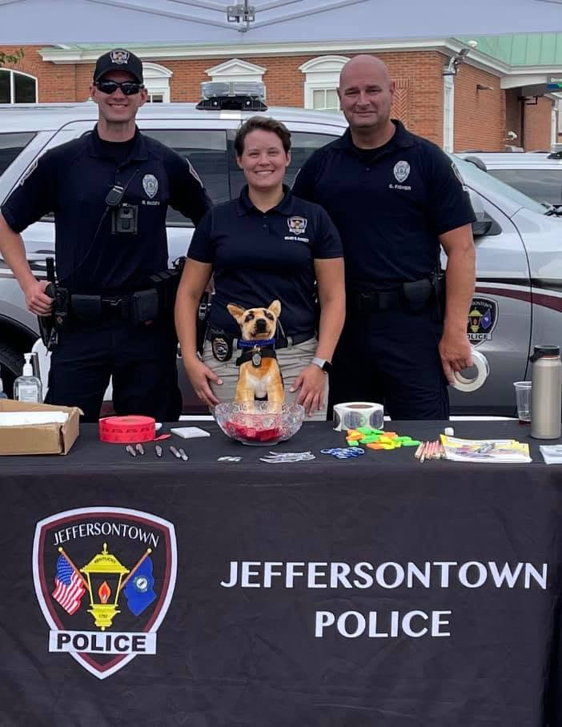
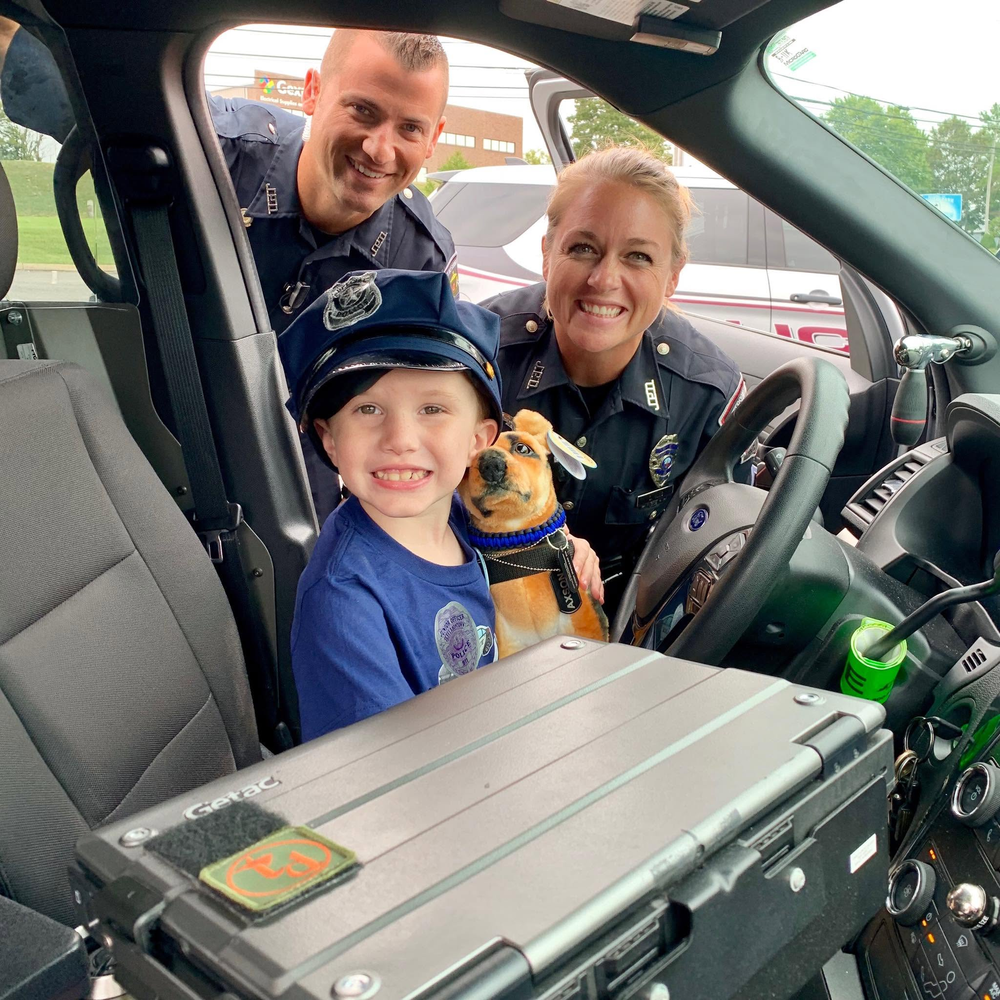
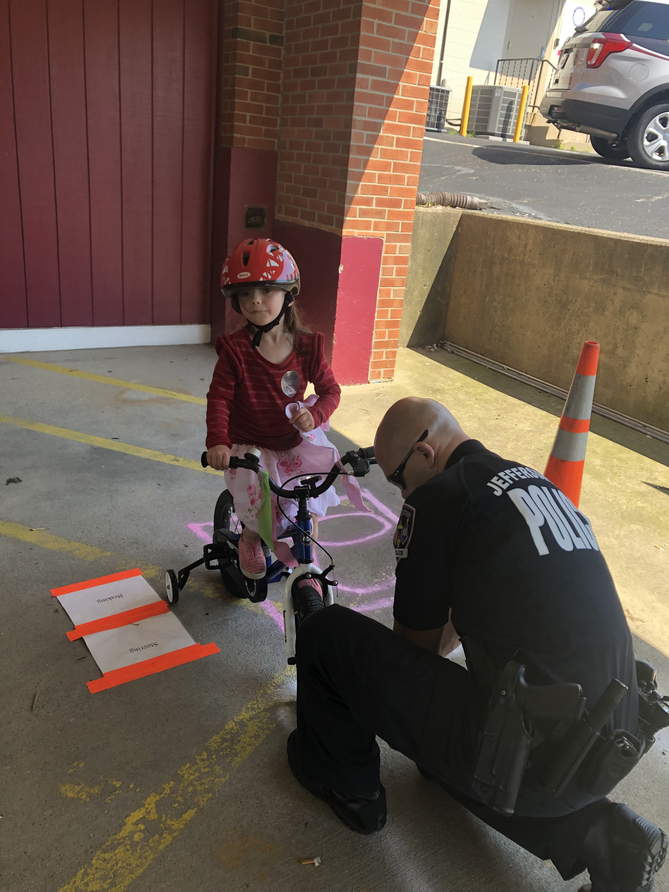
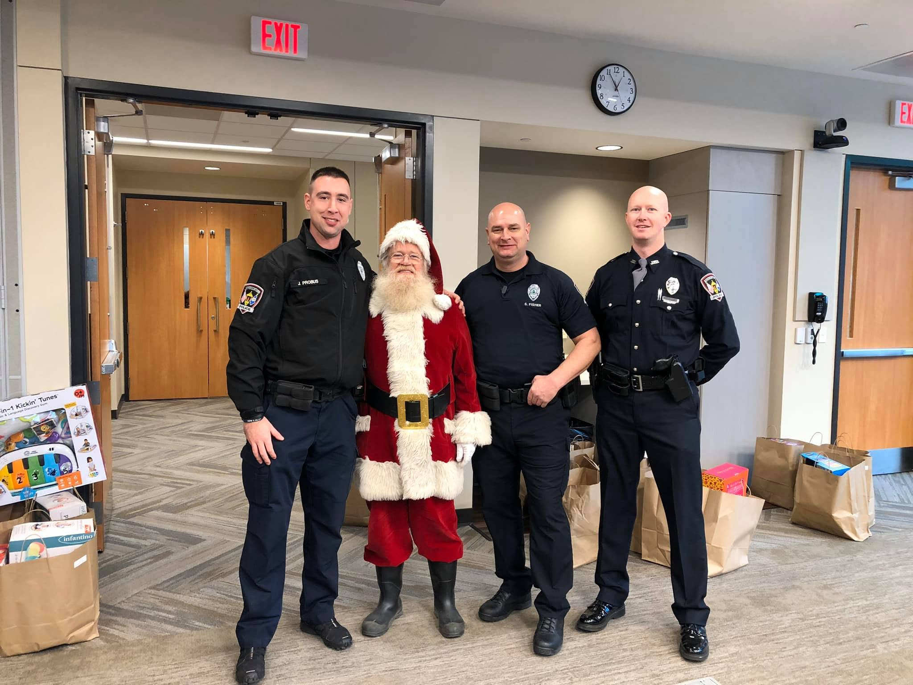

Jeffersontown
Jeffersontown
Neighbors + Officers
Community Events
Support for National Night Out, neighborhood gatherings, open houses and other events that create relaxed opportunities for conversation and relationship-building.
Creating opportunities for officers and residents to connect, serve, learn and build a stronger Jeffersontown together.


Foundation support helps create positive opportunities for residents and officers to connect outside of emergencies—from neighborhood events and youth safety programs to school visits, community service and acts of giving back. These experiences help build relationships before a crisis happens and reinforce that public safety is a community partnership.
From neighborhood events to one-on-one moments with young people, the Foundation can help JPD create more opportunities to show up, listen and build relationships.

Support for National Night Out, neighborhood gatherings, open houses and other events that create relaxed opportunities for conversation and relationship-building.

Coffee with a Cop, Donuts with a Cop, school visits and informal opportunities to know officers outside of an emergency.

Bicycle safety, youth activities, school partnerships and family-focused safety education that build confidence and trust.

Holiday giving, hospital visits, charitable projects and other moments when JPD can show up for the community in a different way.
Positive interactions create familiarity and strengthen relationships between residents and officers.
Informal settings create space to listen, ask questions and better understand one another.
Shared events, safety education and service projects reinforce that public safety works best as a partnership.
Your support can help create more opportunities for officers and residents to meet, serve, learn and build trust together.
Support Community Engagement →